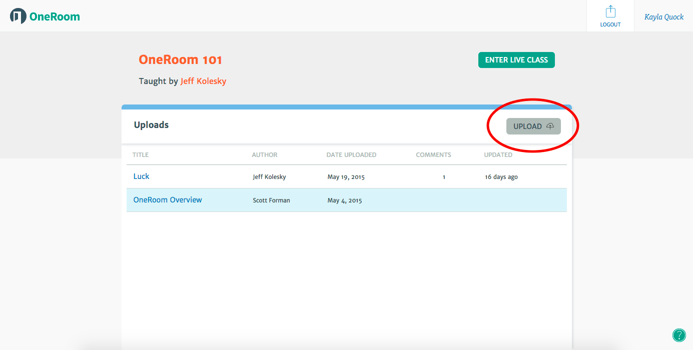
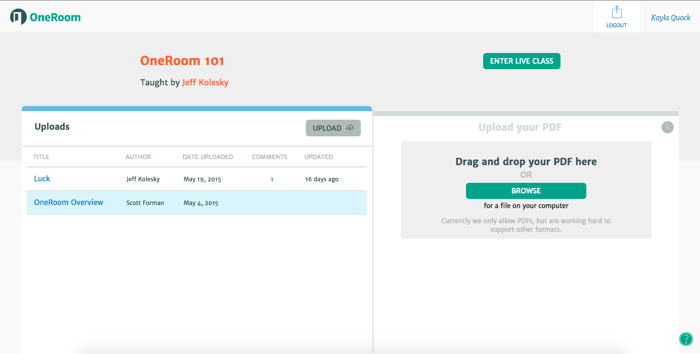
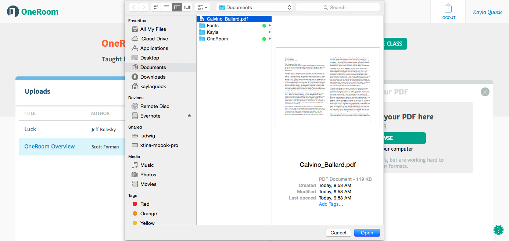
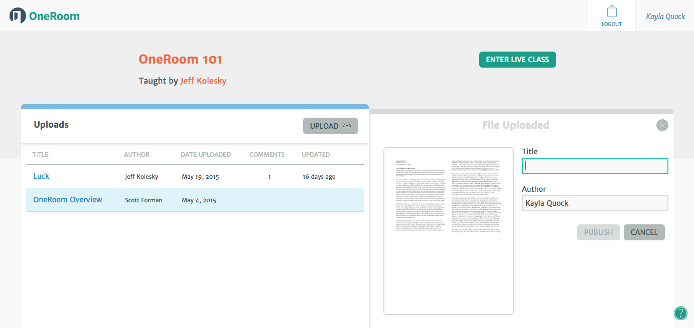

What browser should I use?
Right now OneRoom only runs on Google Chrome. We don’t (yet) run on other browsers or devices other than computers.
If you don't already have Google Chrome on your computer, download it here!
How do I mute myself?
Muting is a useful tool if you’re in a noisy place, or are sick and plagued with constant coughing!
You'll find the mute button in the gray bar located above the videos in your live class. The mute button looks like a mini microphone icon, and appears light gray when deactivated.
When you click the button and mute yourself, you will see the microphone button turn black and a red microphone icon will appear in the top right corner of your video box.

To un-mute yourself, simply click the black microphone button again!
How do I turn my video off?
To turn your own video feed off, click the light grey button (that looks like a camera), located above the live videos. When you turn your video feed off no one will be able to see you and your video box will look like this:

To turn your video back on, just click the camera button (now black) again.
To access all your writing workshop materials, you need to be logged in to your OneRoom account. Once logged in, you’ll be taken to your homepage where you’ll see the title of your workshop listed under “My Classes”.

To access all uploaded workshop materials, just click on the title of your class.
How do I upload my work?
First, you will need to be on the class materials page.
On the right side of the uploads page, you will see a grey upload button.
Once you click the button, an upload drawer will open up on the right side.
Next, click “browse” to find the file you want to upload from your computer. Or, you can find the file separately and then drag and drop it into the upload drawer.
Last, fill in the title and author of the work.
How do I delete my work?


Recommended practices:
- When in a live video class, it’s best to use headphones with a mic. This will help others hear you more clearly and cut down on excess background noise (you’ll hear others better too!).
- Close other programs and tabs on your computer. The less your computer has to manage, the better! Sometimes having too many things running on your computer can decrease your video and audio quality.